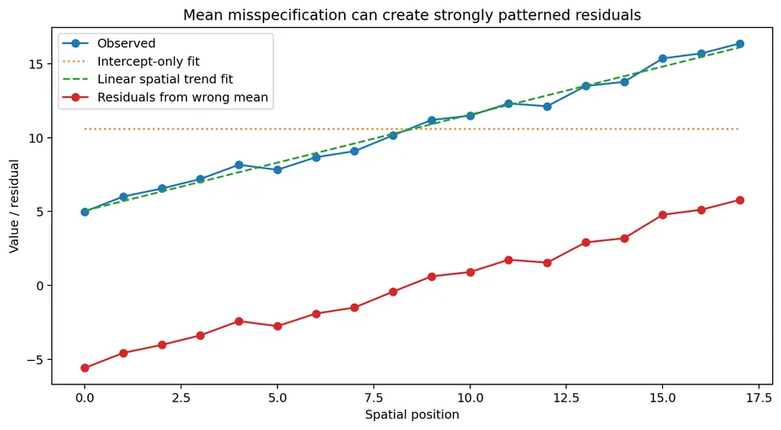
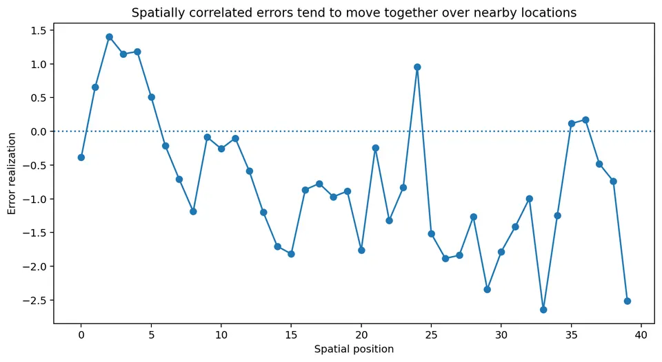
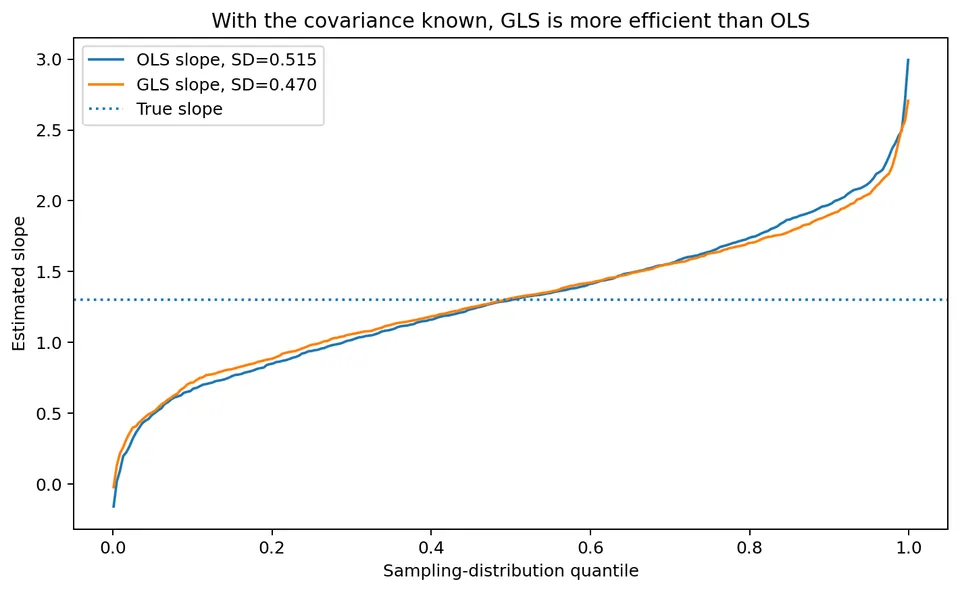
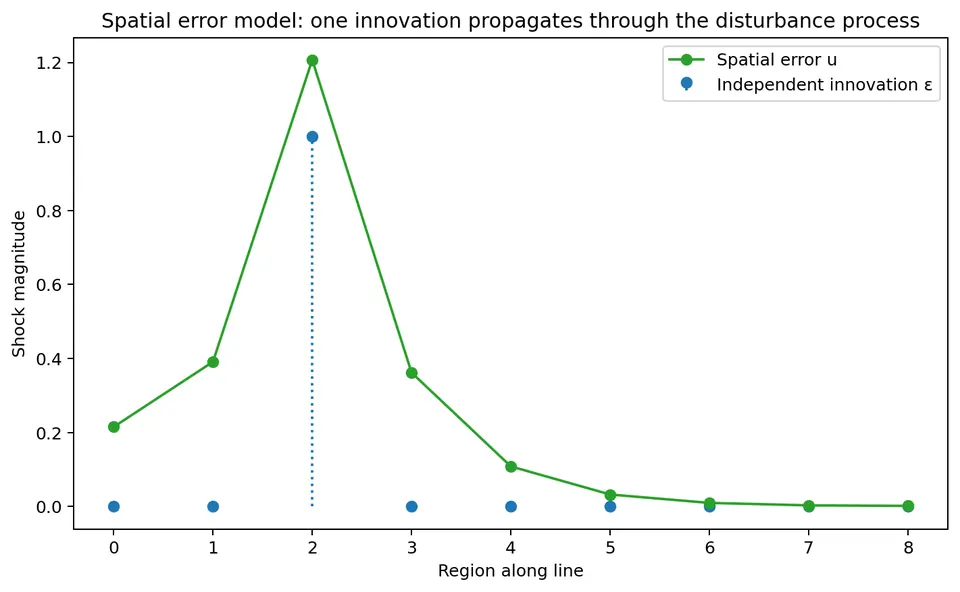
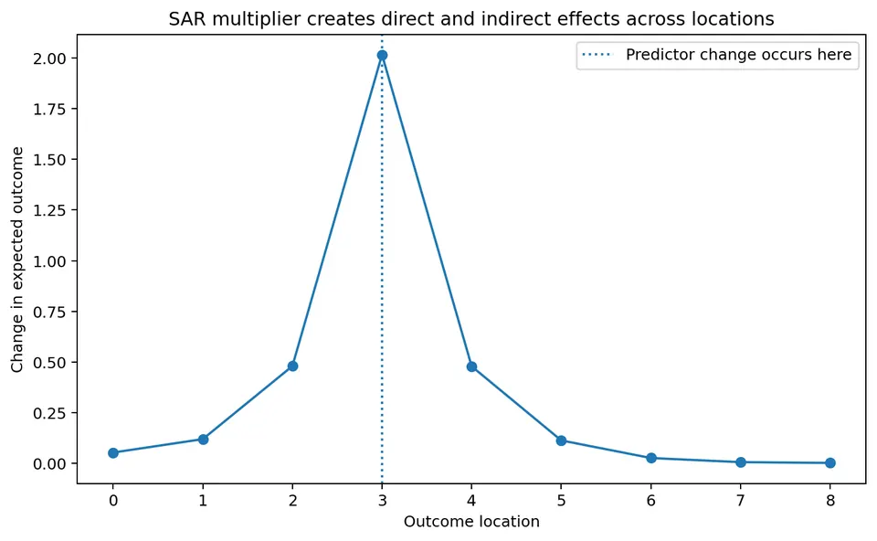
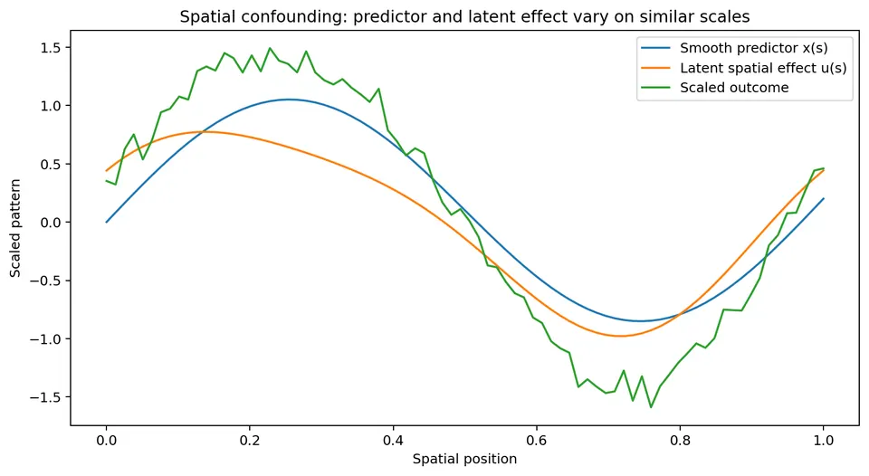
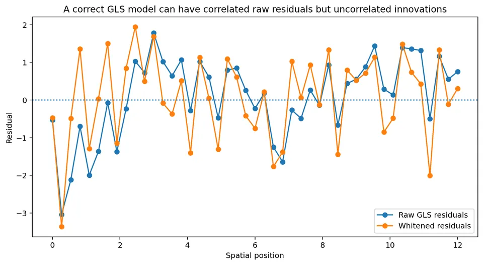
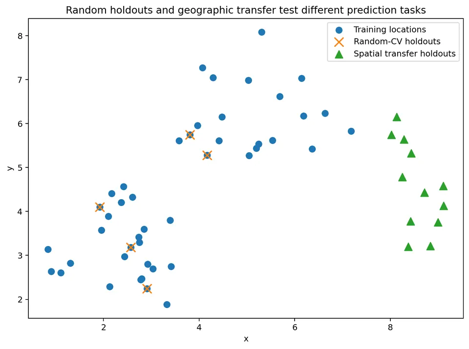

Spatial Regression
Regression models the mean relationship between an outcome and its predictors. A basic linear model is
$$ y=X\beta+\varepsilon, $$
with
$$ E[\varepsilon]=0. $$
In ordinary introductory regression, errors are often treated as independent with common variance:
$$ \mathrm{Cov}(\varepsilon) = \sigma^2 I. $$
Spatial data often violate that assumption because nearby observations can have correlated unexplained variation. A more general model is
$$ \boxed{ y=X\beta+\varepsilon, \qquad \mathrm{Cov}(\varepsilon)=\Sigma }. $$
Spatial regression becomes important when spatial structure remains after the mean relationship has been modeled.
Three Ways a Spatial Pattern Can Enter a Regression
Suppose a response increases from west to east. A spatially varying predictor can explain that gradient through the conditional mean $X\beta$. An omitted regional influence can instead leave a gradient in disturbances. A simultaneous interaction model can describe one region's outcome feeding into its neighbors' outcomes. Similar-looking maps can arise from all three mechanisms, but their coefficients and estimators have different meanings.
In a covariance model $y=X\beta+u$ with $E[u\mid X]=0$, the conditional mean remains $X\beta$ while $\Sigma$ describes how uncertainty is shared among rows. Correlated disturbances alter coefficient variances and the efficient way to combine observations. They do not by themselves change the conditional slope into an outcome spillover.
In a SAR lag model $y=\rho Wy+X\beta+\epsilon$, solving the equations gives $E[y\mid X]=(I-\rho W)^{-1}X\beta$. A covariate change now propagates through the mean system. The spatially lagged response is jointly determined with y, so treating it as an ordinary exogenous predictor generally fails.
There is also a separate identification question. If an unobserved spatial process is associated with the predictors, $E[u\mid X]=0$ can fail. Modeling its covariance does not establish that missing condition. An analysis must distinguish efficiency under a correctly specified mean, prediction using residual information, and interpretation of a coefficient as an association or causal effect. The examples below derive the relevant calculations rather than assuming that every residual spatial pattern calls for the same adjustment.
Start with the mean model
Suppose $y_i$ is an outcome observed at spatial location $s_i$, and $x_i$ is a predictor. A linear mean model is
$$ E[y_i\mid X] = \beta_0+\beta_1x_i. $$
In matrix notation,
$$ E[y\mid X] = X\beta. $$
The residual is
$$ e_i = y_i-\hat y_i. $$
Spatial regression is useful when independent errors do not adequately represent the residual structure.
Why the mean must be diagnosed first
Residual spatial autocorrelation can appear when the mean model is missing systematic spatial structure. Possible causes include:
- an omitted spatially varying predictor;
- an omitted regional effect;
- a nonlinear relationship modeled as linear;
- an unmodeled spatial trend;
- genuine residual spatial dependence.
These mechanisms have different scientific interpretations. If the mean model is misspecified, a spatial covariance term can absorb variation that should have been explained by the predictors.

Numerical example: omitted spatial trend
Suppose observations lie at positions
$$ s=0,1,2,3,4. $$
The true mean is
$$ m(s)=5+2s. $$
Suppose the observed values are
$$ y= \begin{bmatrix} 5.2\\ 7.1\\ 9.0\\ 11.2\\ 12.9 \end{bmatrix}. $$
If we incorrectly fit only an intercept, the fitted mean is
$$ \bar y = \frac{5.2+7.1+9.0+11.2+12.9}{5}. $$
The sum is $45.4$, so
$$ \bar y=9.08. $$
The residuals are
$$ -3.88,\ -1.98,\ -0.08,\ 2.12,\ 3.82. $$
These residuals are strongly spatially patterned. But if we fit the spatial trend
$$ 5+2s, $$
the deviations from the true trend $y_i-m(s_i)$ are
$$ 0.2,\ 0.1,\ 0.0,\ 0.2,\ -0.1. $$
The residuals are now small and show no clear systematic pattern: most of the apparent spatial dependence disappears once the mean structure is modeled correctly.
OLS with spatially correlated errors
The OLS estimator is
$$ \boxed{ \hat\beta_{\text{OLS}} = (X^\top X)^{-1}X^\top y }. $$
A common misunderstanding is:
Spatially correlated errors automatically make OLS coefficients biased.
That is not generally true. If
$$ E[\varepsilon\mid X]=0 $$
and the mean model is correctly specified, OLS can still be unbiased for $\beta$. However, when the error covariance is non-spherical:
$$ \mathrm{Cov}(\varepsilon)=\Sigma\neq\sigma^2I, $$
OLS is generally:
- inefficient compared with GLS;
- accompanied by incorrect usual standard errors if independence is falsely assumed.
The correct covariance of the OLS estimator
Under
$$ y=X\beta+\varepsilon $$
with
$$ \mathrm{Cov}(\varepsilon)=\Sigma, $$
the OLS estimator still has
$$ E[\hat\beta_{\text{OLS}}]=\beta $$
under exogeneity. Its covariance is
$$ \boxed{ \mathrm{Cov}(\hat\beta_{\text{OLS}}) = (X^\top X)^{-1} X^\top\Sigma X (X^\top X)^{-1} }. $$
Under the usual spherical covariance assumption
$$ \Sigma=\sigma^2I, $$
the sandwich expression reduces to $\sigma^2(X^\top X)^{-1}$. For general spatial covariance, use the full expression or an appropriately justified covariance estimator. Particular designs can produce special cancellations, so spherical covariance is the standard sufficient assumption rather than a necessary condition for every isolated coefficient variance to coincide. This distinction is fundamental.
What spatial correlation does to information
Suppose two nearby observations are extremely similar because their errors are strongly correlated. They do not contain as much independent information as two equally precise observations whose errors are independent. Ignoring this redundancy often makes the estimated uncertainty too small. This parallels the logic of kriging: nearby observations can be informative about the same local process, but they can also be redundant.

A structured covariance model
For point-referenced spatial regression, one common covariance model is
$$ \Sigma_{ij} = \sigma_s^2 \exp\left( -\frac{d_{ij}}{a} \right) + \sigma_n^2 I(i=j), $$
where $I(i=j)$ equals 1 when $i=j$ and 0 otherwise, and
- $d_{ij}$ is distance between locations;
- $\sigma_s^2$ is spatially structured variance;
- $a$ is a spatial scale (the practical range of this exponential model is about $3a$);
- $\sigma_n^2$ is nugget or independent noise variance.
For nearby locations, $d_{ij}$ is small, so the spatial covariance is large. As distance increases, the spatial covariance decreases.
Numerical covariance example
Suppose
$$ \sigma_s^2=4, \qquad a=2, \qquad \sigma_n^2=1. $$
For two different locations 1 unit apart,
$$ \Sigma_{ij} = 4e^{-1/2}. $$
Since
$$ e^{-1/2}\approx0.6065, $$
$$ \Sigma_{ij} \approx 4(0.6065) = 2.426. $$
At the same location,
$$ \Sigma_{ii} = 4+1 = 5. $$
Therefore the corresponding correlation at distance 1 is approximately
$$ \frac{2.426}{5} = 0.485. $$
The errors therefore have substantial correlation at this distance.
Generalized least squares
If the covariance matrix $\Sigma$ is known, generalized least squares is
$$ \boxed{ \hat\beta_{\text{GLS}} = (X^\top\Sigma^{-1}X)^{-1} X^\top\Sigma^{-1}y }. $$
If
$$ \Sigma=\sigma^2I, $$
then
$$ \Sigma^{-1} = \frac1{\sigma^2}I, $$
and the constant factor cancels. GLS therefore reduces to OLS in this special case.
What GLS is calculating
OLS minimizes
$$ (y-X\beta)^\top(y-X\beta). $$
This is the ordinary unweighted sum of squared residuals. GLS minimizes
$$ \boxed{ (y-X\beta)^\top \Sigma^{-1} (y-X\beta) }. $$
The inverse covariance matrix adjusts the fitting criterion for:
- unequal uncertainty;
- correlation among observations.
Directions in the residual space with greater redundancy receive less effective weight. More precisely, write a positive-definite covariance as $\Sigma=Q\Lambda Q^\top$. The GLS criterion is $\sum_k (q_k^\top e)^2/\lambda_k$: each residual direction is divided by its variance. Positive correlation can increase the variance of a shared average while decreasing the variance of a contrast. Thus dependence does not uniformly reduce information about every coefficient; the consequence depends on how predictor columns align with the covariance directions.
Whitening interpretation
Suppose $L$ satisfies
$$ LL^\top=\Sigma. $$
For example, $L$ can be a Cholesky factor. Define transformed data
$$ y^*=L^{-1}y $$
and
$$ X^*=L^{-1}X. $$
Then
$$ y^* = X^*\beta+\varepsilon^* $$
with
$$ \mathrm{Cov}(\varepsilon^*)=I. $$
GLS is exactly OLS applied to the whitened data:
$$ \hat\beta_{\text{GLS}} = (X^{*\top}X^*)^{-1}X^{*\top}y^*. $$
This whitening view is often the clearest way to understand GLS. The transformed errors have identity covariance when $\Sigma$ is known. Fitted whitened residuals still satisfy regression constraints: their covariance is $I-H^*$, where $H^*=X^*(X^{*\top}X^*)^{-1}X^{*\top}$. They are therefore neither exactly independent nor equal-variance simply because whitening was used. Residual diagnostics should account for leverage, coefficient fitting, and uncertainty in estimated covariance parameters, for example through model-based simulation.
Fully worked OLS versus GLS example
Consider three observations. The design matrix is
$$ X= \begin{bmatrix} 1&0\\ 1&1\\ 1&2 \end{bmatrix} $$
and the outcome is
$$ y= \begin{bmatrix} 1\\ 2\\ 4 \end{bmatrix}. $$
The first column is the intercept, and the second is the predictor.
OLS calculation
First calculate
$$ X^\top X. $$
We obtain
$$ X^\top X = \begin{bmatrix} 3&3\\ 3&5 \end{bmatrix}. $$
Also,
$$ X^\top y = \begin{bmatrix} 7\\ 10 \end{bmatrix}. $$
The inverse is
$$ (X^\top X)^{-1} = \frac1{6} \begin{bmatrix} 5&-3\\ -3&3 \end{bmatrix}. $$
Therefore
$$ \hat\beta_{\text{OLS}} = (X^\top X)^{-1}X^\top y. $$
Substitute:
$$ \hat\beta_{\text{OLS}} = \frac1{6} \begin{bmatrix} 5&-3\\ -3&3 \end{bmatrix} \begin{bmatrix} 7\\ 10 \end{bmatrix}. $$
The intercept is
$$ \frac{35-30}{6} = \frac56 \approx0.833. $$
The slope is
$$ \frac{-21+30}{6} = \frac96 = 1.5. $$
Thus
$$ \boxed{ \hat\beta_{\text{OLS}} = \begin{bmatrix} 0.833\\ 1.500 \end{bmatrix} }. $$
GLS calculation with correlated errors
Suppose the covariance matrix is
$$ \Sigma = \begin{bmatrix} 1 & 0.6 & 0.2\\ 0.6 & 1 & 0.6\\ 0.2 & 0.6 & 1 \end{bmatrix}. $$
This is a positive-definite covariance matrix in which adjacent observations have strongly correlated errors. Its inverse is approximately
$$ \Sigma^{-1} = \begin{bmatrix} 1.6667 & -1.2500 & 0.4167\\ -1.2500 & 2.5000 & -1.2500\\ 0.4167 & -1.2500 & 1.6667 \end{bmatrix}. $$
Now calculate
$$ X^\top\Sigma^{-1}X \approx \begin{bmatrix} 1.6667 & 1.6667\\ 1.6667 & 4.1667 \end{bmatrix} $$
and
$$ X^\top\Sigma^{-1}y \approx \begin{bmatrix} 4.1667\\ 7.9167 \end{bmatrix}. $$
Therefore
$$ \hat\beta_{\text{GLS}} = (X^\top\Sigma^{-1}X)^{-1} X^\top\Sigma^{-1}y $$
gives
$$ \boxed{ \hat\beta_{\text{GLS}} = \begin{bmatrix} 1.000\\ 1.500 \end{bmatrix} }. $$
In this example the slope happens to remain 1.5, while the intercept changes from the OLS estimate $0.833$ to $1.000$. That is specific to this small example and should not be treated as a general result. The key point is that GLS changes how observations are combined by accounting for error covariance.
Efficiency: why GLS can estimate coefficients more precisely
Under the correctly specified covariance model, the GLS covariance is
$$ \boxed{ \mathrm{Cov}(\hat\beta_{\text{GLS}}) = (X^\top\Sigma^{-1}X)^{-1} }. $$
Under the assumed covariance model, GLS is the efficient linear unbiased estimator. In repeated samples, OLS and GLS may both be centered on the true coefficient, while GLS has smaller sampling variance.

What the OLS-versus-GLS Example Shows about Precision
Using the example's specified covariance, the actual coefficient covariance matrices are
$$ \mathrm{Cov}(\hat\beta_{\mathrm{OLS}}) =\begin{bmatrix}1.04444&-0.4\\-0.4&0.4\end{bmatrix}, \qquad \mathrm{Cov}(\hat\beta_{\mathrm{GLS}}) =\begin{bmatrix}1&-0.4\\-0.4&0.4\end{bmatrix}. $$
GLS reduces the intercept variance here, while the slope variance happens to be unchanged. This is more precise than saying every coefficient must improve strictly. Under the correctly specified known covariance, the covariance difference is positive semidefinite: the variance of every linear coefficient contrast is no greater for GLS, with equality possible for some contrasts.
Spatial dependence can also have opposite consequences for different summaries. For two equal-variance errors with correlation $\rho$, the variance of their average is $\sigma^2(1+\rho)/2$, while the variance of their difference is $2\sigma^2(1-\rho)$. If $\sigma^2=1$ and $\rho=0.8$, these are 0.9 and 0.4. Under independence they would be 0.5 and two. Positive correlation makes the shared level harder to average precisely but makes a paired contrast more precise because the common fluctuation cancels.
For regression, the relevant contrasts are determined by X. A blanket statement that spatial correlation always increases every slope standard error misses this dependence on the design. What fails under an incorrect independence assumption is the usual covariance calculation, rather than a universal direction of error for every coefficient.
Feasible GLS
In real applications, $\Sigma$ is almost never known exactly. Instead, its parameters must be estimated. The workflow is then roughly:
- specify a covariance family;
- estimate covariance parameters;
- construct $\hat\Sigma$;
- replace $\Sigma$ with $\hat\Sigma$;
- estimate $\beta$.
This is often called feasible GLS. Uncertainty should ideally account for the fact that $\Sigma$ was estimated rather than known. The companion simulation uses the true $\Sigma$ only as a teaching device.
Estimating the Covariance: Why Likelihood Includes a Determinant
Let $\Sigma_\theta$ be a positive-definite covariance model indexed by range, variance, nugget, or other parameters $\theta$. Under Gaussian errors, the log-likelihood is
$$ \ell(\beta,\theta) =-\frac12\left\{ n\log(2\pi)+\log\det\Sigma_\theta +(y-X\beta)^\top\Sigma_\theta^{-1}(y-X\beta) \right\}. $$
For fixed $\theta$, maximizing over $\beta$ gives GLS. The quadratic term measures residual size relative to the proposed covariance. The determinant term measures the volume of the corresponding uncertainty distribution and prevents arbitrarily enlarging every variance merely to make standardized residuals small. Both are needed when comparing covariance parameters.
For example, if $\Sigma_\theta=tI$ with a positive variance t and a fixed residual vector e, the criterion contains $n\log t+e^\top e/t$. Increasing t reduces the second term but increases the first. Differentiating gives the maximum-likelihood scale $t=e^\top e/n$ when the residual sum is positive. A criterion based only on the quadratic term would keep favoring larger t.
Estimating the mean consumes information about variability. Restricted maximum likelihood, or REML, accounts for this by using error contrasts that remove X. Up to an additive term that is fixed for a given design, its Gaussian criterion can be written
$$ -2\ell_R(\theta) =\log\det\Sigma_\theta +\log\det(X^\top\Sigma_\theta^{-1}X) +y^\top P_\theta y +(n-p)\log(2\pi), $$
where X has p full-rank columns and
$$ P_\theta=\Sigma_\theta^{-1} -\Sigma_\theta^{-1}X(X^\top\Sigma_\theta^{-1}X)^{-1}X^\top\Sigma_\theta^{-1}. $$
With $\Sigma_\theta=tI$, this gives the familiar scale estimate SSE divided by $n-p$. The added determinant term changes the covariance-estimation problem; it is not an alternative coefficient formula once the covariance is fixed. REML likelihood values from different fixed-effect designs are generally not comparable as if they were likelihoods of the same error contrasts. Mean-model comparisons usually use a suitable full-likelihood or other explicitly calibrated procedure.
After replacing $\Sigma$ by an estimate, feasible GLS is no longer simply a fixed linear transformation of y. The exact known-covariance unbiasedness and efficiency statements should therefore not be asserted automatically for every finite-sample feasible fit. Standard errors often use plug-in or asymptotic calculations; a fitted-model bootstrap or a full probability model can propagate more of the covariance-estimation uncertainty.
Spatial error models for areal data
For areal data, spatial dependence is often represented through a spatial weights matrix $W$. A spatial error model can be written
$$ y=X\beta+u, $$
with
$$ u=\lambda Wu+\varepsilon. $$
Rearrange:
$$ (I-\lambda W)u=\varepsilon. $$
Therefore
$$ \boxed{ u=(I-\lambda W)^{-1}\varepsilon }. $$
What the spatial error parameter means
The parameter $\lambda$ describes spatial dependence in the disturbance process. A local shock in $\varepsilon$ can propagate through the disturbance process. This can represent:
- omitted spatially correlated variables;
- shared measurement processes;
- latent regional influences.
It does not imply that neighboring observed outcomes directly cause one another. The implied disturbance covariance is
$$ \mathrm{Cov}(u)=\sigma^2(I-\lambda W)^{-1}(I-\lambda W^\top)^{-1} $$
when $\mathrm{Cov}(\varepsilon)=\sigma^2I$, and the process is well defined when $I-\lambda W$ is invertible (for a row-standardized $W$, $|\lambda|<1$ suffices).

Numerical spatial-error example
Suppose three regions are arranged in a line:
$$ A-B-C. $$
Use row-standardized weights
$$ W= \begin{bmatrix} 0&1&0\\ 1/2&0&1/2\\ 0&1&0 \end{bmatrix}. $$
Let
$$ \lambda=0.4. $$
Suppose the independent innovations are
$$ \varepsilon= \begin{bmatrix} 1\\ 0\\ 0 \end{bmatrix}. $$
Then
$$ u = (I-0.4W)^{-1}\varepsilon. $$
Numerically,
$$ u \approx \begin{bmatrix} 1.095\\ 0.238\\ 0.095 \end{bmatrix}. $$
A shock originating in region A creates correlated disturbance components in B and C. The propagation occurs in the error process.
Spatial lag / SAR outcome model
A spatial autoregressive outcome model is
$$ \boxed{ y=\rho Wy+X\beta+\varepsilon }. $$
The term $Wy$ is the spatial lag of the outcome. Rearrange:
$$ (I-\rho W)y = X\beta+\varepsilon. $$
Therefore
$$ \boxed{ y = (I-\rho W)^{-1} (X\beta+\varepsilon) }. $$
The matrix
$$ (I-\rho W)^{-1} $$
is called the spatial multiplier. It exists when $I-\rho W$ is invertible; for a row-standardized $W$, $|\rho|<1$ is sufficient. A useful feedback interpretation is $S=I+\rho W+\rho^2W^2+\cdots$, which converges when $|\rho|$ times the spectral radius of $W$ is below one. The powers represent successively longer paths through the graph, including paths that return to their source. Matrix invertibility alone is weaker than this series-convergence condition. An estimated coefficient and $W$ should be checked against the parameter domain used by the fitted model.
Why OLS is generally inappropriate for the SAR lag model
In the SAR model, $Wy$ contains neighboring outcomes. But those neighboring outcomes are themselves determined simultaneously by:
$$ y=\rho Wy+X\beta+\varepsilon. $$
Therefore $Wy$ is generally correlated with the disturbance term. This creates an endogeneity problem. Ordinary OLS applied directly to
$$ y=\rho Wy+X\beta+\varepsilon $$
does not generally estimate $\rho$ consistently. SAR models therefore require methods designed for the simultaneous spatial system, such as maximum likelihood or suitable instrumental-variable or GMM methods.
SAR is not just regression with a neighbor average
It is tempting to interpret $\rho Wy$ as if neighboring outcomes were an ordinary predictor. But $Wy$ is endogenous because it is constructed from the same jointly determined outcome vector. The model determines all locations simultaneously. Let $S=(I-\rho W)^{-1}$. Under independent innovations with variance $\sigma^2$, $Wy=WSX\beta+WS\varepsilon$, so $\mathrm{Cov}(Wy,\varepsilon\mid X)=\sigma^2WS$. Feedback paths generally make the relevant regressor-error covariances nonzero. This is a structural endogeneity problem, whereas a spatial error model leaves the mean $X\beta$ exogenous when its own conditional-zero-mean assumption holds. This changes both estimation and interpretation.
A Two-Region Calculation Shows the Endogeneity
For two regions that are each other's only neighbor, $W=\left[\begin{smallmatrix}0&1\\1&0\end{smallmatrix}\right]$. With independent innovation variance $\sigma^2$ and fixed exogenous predictors, the reduced form contains
$$ y_2=\text{mean contribution} +\frac{\rho\epsilon_1+\epsilon_2}{1-\rho^2}. $$
The regressor $(Wy)_1=y_2$ in the first structural equation is correlated with its error:
$$ \mathrm{Cov}((Wy)_1,\epsilon_1\mid X) =\frac{\rho\sigma^2}{1-\rho^2}. $$
At $\rho=0.4$ and $\sigma^2=1$, this covariance is about 0.4762. The issue is present even when the innovations themselves are independent and X is correctly measured. Simultaneous feedback puts the first region's shock into its neighbor's response and then into its own lagged-response regressor.
Under Gaussian innovations, transforming from y to $\epsilon=(I-\rho W)y-X\beta$ also changes the density by a Jacobian. The SAR log-likelihood contains
$$ \ell=\log|\det(I-\rho W)| -\frac n2\log(2\pi\sigma^2) -\frac{\|(I-\rho W)y-X\beta\|^2}{2\sigma^2}. $$
For the two-region graph, the determinant is $1-\rho^2$. Minimizing the structural residual sum of squares over $\rho$ ignores this density adjustment and is not the same optimization as maximum likelihood. PySAL's derivation of spatial lag likelihood explicitly includes this term. Instrumental-variable approaches address the regressor-error relation through different assumptions and moment conditions.
Direct and indirect effects in SAR models
Suppose there is one predictor $x$:
$$ y = \rho Wy+\beta x+\varepsilon. $$
Then
$$ E[y\mid x] = (I-\rho W)^{-1}\beta x. $$
The derivative of expected outcomes with respect to $x$ is
$$ \boxed{ \frac{\partial E[y]}{\partial x^\top} = (I-\rho W)^{-1}\beta }. $$
The result is a matrix. Its diagonal entries describe effects on the same location. Its off-diagonal entries describe spillover effects on other locations.
Three-region SAR impact example
Again use
$$ A-B-C $$
with
$$ W= \begin{bmatrix} 0&1&0\\ 1/2&0&1/2\\ 0&1&0 \end{bmatrix}. $$
Let
$$ \rho=0.4 $$
and
$$ \beta=2. $$
Then
$$ S = (I-0.4W)^{-1}. $$
Numerically,
$$ S \approx \begin{bmatrix} 1.095 & 0.476 & 0.095\\ 0.238 & 1.190 & 0.238\\ 0.095 & 0.476 & 1.095 \end{bmatrix}. $$
Multiply by
$$ \beta=2. $$
The impact matrix is approximately
$$ 2S = \begin{bmatrix} 2.190 & 0.952 & 0.190\\ 0.476 & 2.381 & 0.476\\ 0.190 & 0.952 & 2.190 \end{bmatrix}. $$
Interpret one predictor change
Suppose $x_A$ increases by one unit. The first column of the impact matrix gives the effect:
$$ \Delta E[y] \approx \begin{bmatrix} 2.190\\ 0.476\\ 0.190 \end{bmatrix}. $$
So:
- outcome A increases by about 2.19;
- outcome B increases by about 0.48;
- outcome C increases by about 0.19.
The ordinary coefficient
$$ \beta=2 $$
is therefore not, by itself, the total effect at A or across the system. An impact-matrix entry in row $i$, column $j$ is the modeled response at destination $i$ to a change in predictor $j$. The average direct effect is the mean diagonal entry. The average total effect is the mean row sum, and the average indirect effect is their difference. Here they are approximately $2.254$, $3.333$, and $1.079$. Because $W\mathbf1=\mathbf1$, a simultaneous one-unit increase at every region gives $S\beta\mathbf1=\beta\mathbf1/(1-\rho)$, explaining the total $2/(1-0.4)=3.333$. A change only at A uses one column, rather than this common-change calculation.

Mean structure, spatial error, or spatial lag?
A significant Moran statistic on OLS residuals indicates that spatial structure remains in the residuals. It does not, by itself, identify which spatial model should be used. Several explanations are possible.
Missing mean structure
Maybe a spatially varying covariate was omitted.
Spatial error dependence
Maybe unobserved disturbances are spatially correlated.
Spatial lag dependence
Maybe the scientific mechanism genuinely implies simultaneous outcome spillovers.
Continuous covariance
For point-referenced data, a distance-based covariance model may be more natural than a discrete $W$. Model choice should follow the scientific mechanism and data support, not only the residual Moran statistic.
A practical decision sequence
Before adding a spatial dependence term, ask:
- Is the outcome modeled on the correct scale?
- Are important covariates missing?
- Is the functional form plausible?
- Are regional fixed effects needed?
- Is dependence naturally continuous in distance?
- Is $W$ substantively meaningful?
- Is there a credible outcome-spillover mechanism?
- Is the goal prediction, description, or causal inference?
The answers help narrow the appropriate model class.
Why Residual Covariance Does Not Select between SEM and SAR
Let $S_a=(I-aW)^{-1}$. A spatial error model with parameter a has mean $X\beta$ and disturbance covariance $\sigma^2S_aS_a^\top$. A spatial lag model with the same parameter and innovation variance has the same covariance matrix but mean $S_aX\beta$.
Their distinction is therefore partly in the mean mechanism. The error model allows a covariate association to remain local in its specified mean while disturbances are correlated. The lag model propagates the covariate contribution through the graph. A statistic summarizing residual similarity cannot by itself establish which mean mechanism generated the data. Identification also depends on X, restrictions, and the sampling process; some specifications can be difficult to distinguish empirically.
For the two-region lag model with one predictor coefficient $\beta=2$ and $\rho=0.4$, the impact matrix is
$$ \frac{2}{1-0.4^2} \begin{bmatrix}1&0.4\\0.4&1\end{bmatrix} =\begin{bmatrix}2.3810&0.9524\\0.9524&2.3810\end{bmatrix}. $$
A change in one region has a direct association exceeding two because of return paths, and an indirect association with the other region. In the corresponding spatial error mean model, the partial mean derivative is simply two for that region and zero for the other, conditional on its exogeneity assumptions. Interpreting either derivative causally requires a separate argument about the predictor intervention and the stability of the structural system.
Spatial confounding
Spatial predictors often vary smoothly over space. Latent spatial effects also vary smoothly. The two components can therefore explain similar spatial patterns in the outcome. Suppose
$$ y(s) = \beta x(s) + u(s) + \varepsilon(s), $$
where
- $x(s)$ is a smooth spatial predictor;
- $u(s)$ is a flexible spatial random effect.
If $x(s)$ and $u(s)$ have similar spatial scales, the model may struggle to decide which component should explain a broad spatial pattern. This is called spatial confounding.

Why spatial confounding matters
A coefficient estimate can change when we change:
- covariance range;
- basis functions;
- smoothing penalty;
- priors;
- spatial resolution;
- included covariates.
This does not automatically mean that the spatial model is wrong. It means that the predictor and latent spatial effect are competing to explain similar variation. Coefficient interpretation should therefore be accompanied by sensitivity analysis.
A coefficient is not made causal by adding a spatial effect
Suppose an observational study estimates
$$ y = \beta x + \text{spatial random effect} + \varepsilon. $$
Modeling spatial autocorrelation can improve:
- residual structure;
- standard errors;
- prediction.
But it does not automatically solve problems such as:
- unmeasured confounding;
- reverse causation;
- selection bias;
- measurement error;
- interference.
Causal interpretation requires a separate identification argument.
Residual diagnostics after spatial modeling
After fitting a spatial model, the diagnostics should match the model structure. For a standard OLS fit, inspect ordinary residuals. For a GLS model,
$$ e=y-X\hat\beta_{\text{GLS}} $$
can still be spatially correlated because the model explicitly says the errors have covariance $\Sigma$. It is therefore often useful to inspect whitened residuals:
$$ e^* = L^{-1}e, \qquad LL^\top=\Sigma. $$
If the covariance model is adequate, $e^*$ should be much closer to uncorrelated noise.

Residual Moran's I after GLS
An important point:
A good GLS model does not necessarily make the raw residual map look spatially independent.
The raw residuals are estimates of a process that the model explicitly allows to be spatially correlated. The more relevant question is whether the remaining unexplained structure, after accounting for the fitted covariance, is compatible with the model. Whitened or innovation residuals provide one way to check this.
Residual variograms
For point-referenced regression, another useful diagnostic is the residual variogram. After fitting the mean model, calculate residuals
$$ e_i=y_i-\hat y_i. $$
Then examine whether residual semivariance changes with distance. If strong structure remains and was not included in the covariance model, the model may be incomplete.
Heteroskedasticity
Spatial dependence and heteroskedasticity are separate features of the error structure. A model can have:
- independent but unequal-variance errors;
- correlated equal-variance errors;
- both correlation and unequal variance.
Therefore residual diagnostics should inspect both:
- spatial structure;
- variance patterns.
Influential locations
Spatial data can contain influential observations. An observation may be influential because it has:
- an extreme predictor value;
- an unusual outcome;
- a strategically important spatial position;
- few nearby neighbors;
- high leverage in the mean model.
Influence diagnostics should therefore be interpreted together with the observation's spatial location.
Prediction and coefficient inference are different goals
A model can predict well because location acts as a proxy for omitted processes. That does not mean its regression coefficients have strong scientific interpretations. For example, a flexible spatial effect may absorb most of the broad pattern and yield excellent prediction. But the estimated coefficient for a smooth exposure may become unstable. Prediction asks:
Can we accurately estimate outcomes at new locations?
Parameter inference asks:
What does $\beta$ tell us about the relationship between predictors and outcome?
These goals can conflict.
Random cross-validation can be too optimistic
Suppose nearby locations are strongly correlated. In ordinary random cross-validation, a held-out point may still have training observations only a short distance away. A spatial model may predict it very well using nearby information. But if the deployment task is to predict in a new geographic region, that validation result may be much too optimistic. Use spatially blocked validation when geographic transfer is the actual prediction goal.

Model comparison should use the right target
If the goal is coefficient inference, compare:
- coefficient stability;
- uncertainty calibration;
- residual structure;
- scientific plausibility.
If the goal is spatial prediction, compare:
- held-out prediction error;
- uncertainty calibration;
- transfer performance at relevant distances.
Do not choose a model only because it has the smallest in-sample residual sum of squares.
A complete workflow
A practical spatial-regression analysis can proceed as follows.
Define the spatial support
Decide whether data are:
- areal;
- point-referenced;
- another structure.
Inspect the response and covariates spatially
Map:
- outcome;
- major predictors;
- exposure;
- missingness.
Fit and diagnose the mean structure
Check:
- linearity;
- interactions;
- omitted trend;
- regional effects.
Inspect residual spatial structure
Use:
- residual Moran's $I$ for areal data;
- residual variograms for point-referenced data;
- residual maps.
Choose a dependence model scientifically
Possibilities include:
- GLS with continuous covariance;
- spatial error model;
- SAR/lag model;
- spatial random effects;
- Gaussian-process regression.
Estimate the model using appropriate methods
Do not fit an endogenous SAR lag with ordinary OLS.
Inspect model-appropriate residuals
Use:
- raw residuals where appropriate;
- whitened residuals;
- innovation residuals;
- residual spatial summaries.
Evaluate coefficient sensitivity
Check sensitivity to:
- covariance family;
- neighborhood definition;
- spatial scale;
- included covariates.
Validate according to the prediction task
Use spatial validation when extrapolation across space matters.
Common mistakes
Adding a spatial covariance before diagnosing the mean
The spatial term may absorb an omitted trend.
Saying correlated errors automatically bias OLS coefficients
Under correct mean specification and exogeneity, OLS can remain unbiased, although usual OLS standard errors are generally invalid and OLS is inefficient.
Interpreting $\lambda$ in a spatial error model as outcome spillover
It describes dependence in the disturbance process.
Fitting $y$ on $Wy$ using ordinary OLS in a SAR model
$Wy$ is generally endogenous.
Interpreting the SAR coefficient $\beta$ like an ordinary regression slope
Effects propagate through
$$ (I-\rho W)^{-1}. $$
Expecting raw GLS residuals to be spatially independent
The fitted covariance model explicitly allows correlation in the raw residual process.
Assuming a spatial random effect makes a coefficient causal
Causal identification requires more than residual spatial adjustment.
Evaluating geographic transfer using only random cross-validation
Nearby training observations can make performance look unrealistically good.
Compact worked comparison
Suppose (with illustrative numbers) the true data-generating model is
$$ y_i = 3+1.5x_i+\varepsilon_i $$
with
$$ \mathrm{Cov}(\varepsilon_i,\varepsilon_j) = 2e^{-d_{ij}/5}. $$
An OLS fit gives
$$ \hat\beta_1=1.47. $$
The coefficient can be close to the true value because the mean model is correctly specified. However, the naive OLS standard error assumes independent errors and reports
$$ SE_{\text{naive}}=0.08. $$
A covariance-aware analysis gives
$$ SE=0.18. $$
The main problem with the naive analysis is not necessarily the point estimate. It is the claim of excessive precision.
Worked Identification Problem: A Smooth Exposure and an Omitted Regional Process
Suppose the true model is $y=X\beta+u+\epsilon$, with $E[\epsilon\mid X]=0$ but a possible relationship between X and the omitted process u. Ordinary least squares satisfies
$$ E[\hat\beta_{\mathrm{OLS}}\mid X] =\beta+(X^\top X)^{-1}X^\top E[u\mid X]. $$
The additional term is a mean-specification problem. Knowing the covariance of u can improve weighting but does not make its conditional mean zero. For a smooth exposure x and an unmeasured process with $E[u\mid x]=\delta x$, the observed conditional slope is $\beta+\delta$. The data do not identify the two contributions from that one association alone.
A related model-fitting problem occurs when an explicit spatial basis includes the same pattern as x. If the model contains both $\beta x$ and $\gamma x$, then any pair with the same sum gives identical fitted means. The separate coefficients are unidentified. A prior or penalty can select an allocation, but the allocation then uses that additional assumption. Nearly overlapping smooth basis patterns give a less extreme version, with unstable allocations and potentially stable predictions.
This explains why adding a flexible spatial effect can improve prediction while making a covariate coefficient more sensitive to the covariance range, smoothing penalty, or prior. It also explains why a spatial adjustment does not automatically remove causal confounding. Useful additional information could include measured common causes, within-region contrasts at a scale that separates the patterns, a design that assigns exposure independently, or justified external restrictions. Each changes the identification argument rather than merely changing a standard-error formula.
Prediction uses another source of information. Under an appropriate fitted covariance model, a response at a new site can be predicted as
$$ \hat y_0=x_0^\top\hat\beta +c_0^\top\hat\Sigma^{-1}(y-X\hat\beta), $$
where $c_0$ links the target residual with observed residuals. This can work well through local residual information even when the decomposition between a smooth predictor and latent effect is uncertain. Assessing a regional-transfer prediction requires holding out comparable regions; assessing the meaning of $\beta$ requires evidence about identification and sensitivity. A high predictive score does not supply the missing coefficient interpretation.
Questions students should be able to answer
- Why should the mean model be checked before adding a spatial dependence term?
- Can OLS remain unbiased with spatially correlated errors?
- Why can the usual OLS standard errors be wrong under spatial dependence?
- What does $\Sigma^{-1}$ do in GLS?
- How is GLS related to whitening?
- Why does GLS reduce to OLS when $\Sigma=\sigma^2I$?
- What does $\lambda$ represent in a spatial error model?
- What does $\rho$ represent in a SAR model?
- Why is $Wy$ endogenous in a simultaneous SAR model?
- Why is $\beta$ in a SAR model not the complete effect?
- What are direct and indirect spatial effects?
- What is spatial confounding?
- Why can raw GLS residuals still be spatially correlated?
- Why are spatially blocked validation and random validation answering different questions?
- Why does spatial adjustment not automatically create causal identification?